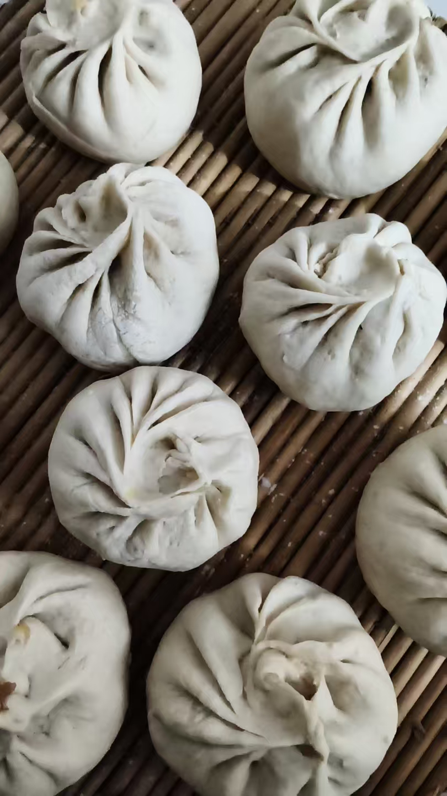
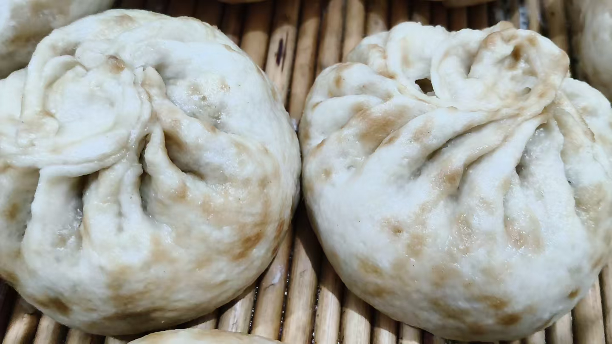

20260903财神节
民间文化 原始对话记录今天财神节
潍坊市区一早就放鞭炮了
虽然下了令，严禁小区放鞭炮
农村是下午供奉，傍晚放鞭炮
我开始供奉了
煮了芹菜豆腐水饺

蒸白菜肉大包子
这是生的，还没蒸

皮薄，酱油色都漏出来了
以下为编者整理的主题文章
编者整理 · 主题文章
下了令，还是有人放鞭
导读：又一个财神节，这次在潍坊。市区一早就放鞭炮，虽然下了令，严禁小区放鞭炮；农村是下午供奉，傍晚放鞭炮。这一天的供品很家常：芹菜豆腐水饺，白菜肉大包子。
今天财神节。潍坊市区一早就放鞭炮了。虽然下了令，严禁小区放鞭炮。
农村是下午供奉，傍晚放鞭炮。
一个节，城里和乡下过的时辰不一样。城里一早放炮；乡下要等到下午才摆供，傍晚再放。
我开始供奉了。煮了芹菜豆腐水饺。
底下跟一张图。再往下，蒸白菜肉大包子——这是生的，还没蒸。又一张图，皮薄，酱油色都漏出来了。
另一个财神节，记的是山东别处：到处在放鞭炮，小区物业一周前就张罗着给预订四大件，整鸡、整鱼、方肉、方豆腐。一页讲排面，四样整菜，由物业统一张罗；这一页讲自家灶台上的水饺和包子。
供什么，各按各的家常来。《关于初一十五，上香》里说，网上批发酥油灯不贵，批发几箱，觉得有所求的时候，就供灯，供三盏；供品也简单，买三样水果就行。《节日供奉祖先》里列了四个日子——清明、七月半、寒衣、春节。
财神节各地日期不一，也有正月初五"迎财神"的一说。这两页记录都没写具体日子，只在开头各压一句"今天财神节"。
放鞭这一条，记录里也顺着写了一笔：市里下了令，还是有人放。
就这些。
说明与免责：本站为民间修炼、民俗文化与传统文化资料的整理与记录，内容源自传承者口传与个人修习体会，仅供文化交流与研究参考，不构成医疗、健康、投资或任何功效承诺。所述内容属传统术数范畴，请理性看待；如身体不适，请及时就医。请遵守法律法规与公序良俗。